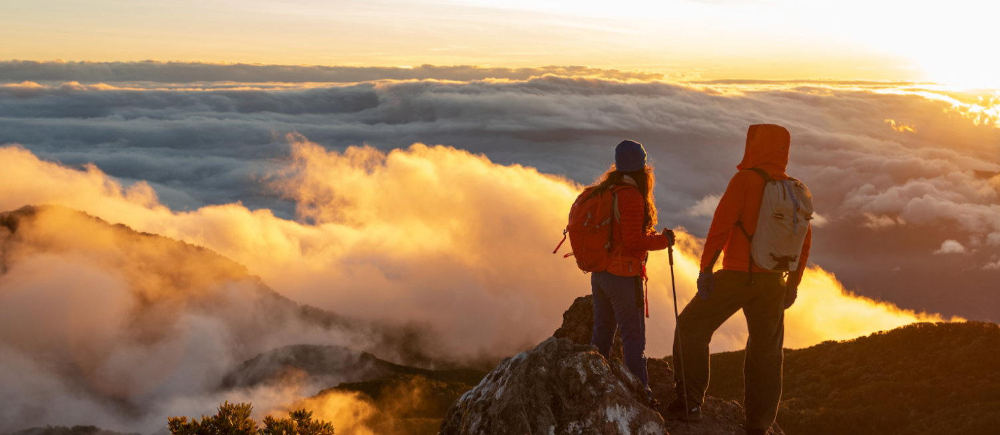

Volcan Baru
Con una extensión de 14,325 hectáreas, el Parque Nacional Volcán Barú se localiza en la Provincia de Chiriquí, al norte del país. Nos encontramos con escenarios que van desde paisajes del bosque lluvioso tropical con especies de gran altura hasta productos de la última erupción del Volcán Barú hace millones de años.
Gastronomia
Con una extensión de 14,325 hectáreas, el Parque Nacional Volcán Barú se localiza en la Provincia de Chiriquí, al norte del país. Nos encontramos con escenarios que van desde paisajes del bosque lluvioso tropical con especies de gran altura hasta productos de la última erupción del Volcán Barú hace millones de años.
Senderismo
Con una extensión de 14,325 hectáreas, el Parque Nacional Volcán Barú se localiza en la Provincia de Chiriquí, al norte del país. Nos encontramos con escenarios que van desde paisajes del bosque lluvioso tropical con especies de gran altura hasta productos de la última erupción del Volcán Barú hace millones de años.
Vida Nocturna
Con una extensión de 14,325 hectáreas, el Parque Nacional Volcán Barú se localiza en la Provincia de Chiriquí, al norte del país. Nos encontramos con escenarios que van desde paisajes del bosque lluvioso tropical con especies de gran altura hasta productos de la última erupción del Volcán Barú hace millones de años.
Otros
Con una extensión de 14,325 hectáreas, el Parque Nacional Volcán Barú se localiza en la Provincia de Chiriquí, al norte del país. Nos encontramos con escenarios que van desde paisajes del bosque lluvioso tropical con especies de gran altura hasta productos de la última erupción del Volcán Barú hace millones de años.